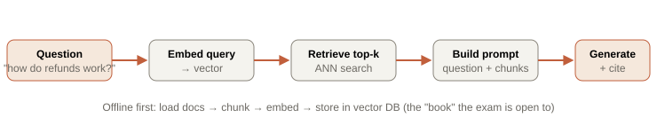

Chapter 7. RAG fundamentals
Retrieval-Augmented Generation is the "open-book exam" for LLMs: instead of hoping the model memorized your knowledge (it didn't — Chapter 4), you fetch the relevant passages at query time and put them in the prompt. This chapter builds a complete naive RAG pipeline in code, dissects chunking with real numbers, and — most importantly — teaches you to induce and categorize failures, because the failure taxonomy you build here drives every advanced technique in Chapter 8.
7.1 The core loop

TypeScript — naive RAG end to end (uses the gateway from Ch 5)
async function answerWithRAG(question: string): Promise<Answer> {
const qVec = await embed(question); // same model used at index time!
const chunks = await vectorDB.search(qVec, { topK: 5 }); // nearest passages
const context = chunks
.map((c, i) => `[${i + 1}] (${c.source}) ${c.text}`) // number them so the model can cite
.join("\n\n");
const prompt = `Answer using ONLY the context. Cite sources as [n].
If the answer is not in the context, say "I don't find this in the provided documents."
<context>
${context}
</context>
Question: ${question}`;
const text = await generate(prompt, { role: "synthesizer", temperature: 0 });
return { text, sources: chunks }; // always return provenance
}Two non-negotiables already visible: the query must be embedded with the same model used for indexing (different models = incompatible vector spaces = garbage retrieval — a shockingly common bug), and the prompt must instruct grounding and abstention ("say you don't know") or the model will paper over retrieval gaps with confident fabrication.
7.2 Why RAG beats fine-tuning for knowledge (revisited concretely)
- Freshness: new document → re-index in seconds. Fine-tuning → hours/days and a new model artifact.
- Provenance: RAG cites the exact source; users (and auditors) can verify. Weights cite nothing.
- Deletion / compliance: delete a document from the index and it's gone. You cannot cleanly remove one fact from trained weights.
- Cost: indexing is cheap; fine-tuning is not, and must be repeated as knowledge changes.
7.3 Chunking: the decision that quietly determines everything
| Strategy | How | Trade-off |
|---|---|---|
| Fixed-size | Every N tokens | Simple; blindly splits sentences, tables, functions mid-thought |
| Recursive character | Split on paragraphs, then sentences, to hit a target size | Good default; respects some structure |
| Structure-aware | Split at markdown headings / code function boundaries (tree-sitter) | Best for docs & code; each chunk is a coherent unit — this is what RepoSage uses |
| Semantic | Split where embedding similarity between adjacent sentences drops | Adaptive; more compute at index time |
Chunks too small (1 sentence): the 3 sentences become 3 chunks; retrieving one gives the model a fragment without context ("It must be returned within 30 days" — what must?). Retrieval may rank them separately and miss some.
Chunks too large (whole 5-page doc): one chunk contains the answer plus 4.9 pages of noise; the embedding is an average of everything, so it's a weak match for a specific query, and you burn context tokens on irrelevance.
Sweet spot (~300–500 tokens with 10–15% overlap): the passage stays whole, the embedding is focused, overlap prevents an answer from being severed exactly at a boundary. Always tune on YOUR data with an eval set — there is no universal number.
7.4 Why naive RAG fails — the taxonomy that drives Chapter 8
This is the heart of the chapter. Build naive RAG, then deliberately break it and name each failure — because each named failure maps to a specific fix in the next chapter.
| Failure | Symptom | Root cause | Ch 8 fix |
|---|---|---|---|
| Vocabulary mismatch | User says "money back", docs say "refund"; keyword-only misses, vectors sometimes weak | Lexical gap; embeddings imperfect on rare terms/IDs | Hybrid search (BM25 + vectors) |
| Chunk-boundary split | Answer spans two chunks; each half retrieves poorly | Chunking severed the answer | Better chunking + overlap; contextual retrieval |
| Lost in the middle | Right chunk retrieved, but the model ignores it | Models attend to prompt start/end, snooze in the middle | Reranking + context ordering |
| Low precision | Top-5 includes 3 irrelevant chunks; answer gets distracted | First-stage retrieval is recall-oriented, not precise | Cross-encoder reranking |
| Ambiguous / vague query | "How does it work?" retrieves scattershot | Query too underspecified to embed well | Query rewriting / HyDE |
| Multi-hop | "Which team owns the service that calls X?" fails | Needs 2+ chained lookups; naive RAG does 1 | Query decomposition; Graph RAG |
| Hallucination on gap | Nothing relevant retrieved, model invents an answer | No grounding/abstention discipline | Self-correction (CRAG) + eval gates (Ch 9) |
labs/07-naive-rag/ — build the pipeline over ~50 docs, then run a provided "break-it" question set and classify each failure into the taxonomy above. Output: a committed failures.json that seeds your Chapter 9 eval set. npm run lab07.Interview ammunition
Design a RAG system for a company's internal wiki. Walk me through it.
Offline: load pages, chunk structure-aware (~400 tokens, small overlap), embed with a strong model, store in a vector DB with metadata (space, author, updated_at). Online: embed query, retrieve top-k, assemble a grounded prompt that demands citations and abstention, generate at temp 0, return sources. Then I'd immediately build an eval set from real failure questions and iterate — hybrid search and reranking only where the failure taxonomy justifies them. I'd call out freshness (re-index on edit), access control (filter by user permissions at retrieval — a security must), and evaluation as the parts most demos skip.
Your RAG gives a wrong answer. How do you debug it?
Localize the stage. Log the retrieved chunks: if the answer wasn't in them → retrieval failure (chunking? embedding? query?). If it WAS retrieved but the answer is still wrong → generation failure (lost-in-the-middle, weak grounding prompt, or too much distracting context). This retrieve-vs-generate split is the first cut; tracing every stage (Ch 9) makes it mechanical. "I'd look at the retrieved context first" is the answer they want — most people jump to blaming the model.
How do you choose chunk size?
Empirically, on your own eval set. Too small loses context and fragments answers; too large dilutes the embedding and wastes tokens. Start ~300–500 tokens with ~10–15% overlap and structure-aware boundaries (never split a function or table), then sweep sizes and measure retrieval precision/recall and final answer quality. There's no universal number — anyone who quotes one without "measure on your data" is guessing.
When is RAG the wrong choice?
When the task needs a behavior/skill/format rather than knowledge (fine-tune), when answers require reasoning over the ENTIRE corpus at once rather than a few passages (RAG retrieves a subset — consider summarization indexes or Graph RAG), or when the "knowledge" is small and static enough to fit in the prompt directly (just include it, skip the machinery). RAG shines for large, changing, citable knowledge bases.
Whiteboard summary
RAG = embed query → retrieve top-k → grounded prompt → generate + cite. Query & index must share the embedding model.
RAG > fine-tune for knowledge: fresh, cited, deletable, cheap.
Chunking is highest-leverage: structure-aware, ~300–500 tok, 10–15% overlap; retrieval can only return a chunk.
Failure taxonomy → fixes: vocab→hybrid, boundary→chunking/contextual, lost-middle→rerank/order, precision→cross-encoder, vague→rewrite/HyDE, multi-hop→decompose/graph, gap→abstain+CRAG.
Debug = retrieve-vs-generate split: check the retrieved chunks first.
Further reading
- RAG paper (Lewis et al., 2020) · Lost in the Middle (2023)
- LangChain.js RAG tutorial · LlamaIndex.TS
- Anthropic — Contextual Retrieval (preview of Ch 8's biggest simple win)